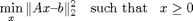

Non-negative least-squares (NNLS) using L-BFBS-B
Non-negative least-squares solves the following problem: 
The matrix 'A' may have more columns than rows (the 'underdetermined' case), or more rows than columns (the 'overdetermined' case), or the same number of rows and columns. Some solvers, such as the PQN method described in "Tackling Box-Constrained Optimization via a new Projected Quasi-Newton Approach" by Dongmin Kim, Suvrit Sra, and Inderjit Dhillon (http://www.cs.utexas.edu/users/inderjit/public_papers/pqnj_sisc10.pdf), only work for the overdetermined case.
To quote from that paper, "Not surprisingly, some constrained optimization methods have also been applied to solve NNLS. It is interesting to note that for large scale problems these specialized algorithms are outperformed by modern methods such as TRON, LBFGS-B, or the methods of this paper. Curiously this fact has not yet been widely adopted by the wider research community (footnote: This could be because Matlab continues to ship the antiquated lsqnonneg function, which is an implementation of the original NNLS algorithm of Lawson and Hanson 1974 )."
The Kim/Sra/Dhillon paper compares the following algorithms:
Fast NNLS, by Rasmus Bro. Available at: http://www.mathworks.com/matlabcentral/fileexchange/3388-nnls-and-constrained-regression
mtron, mex wrapper by Christoph Ortner, available at: http://www.mathworks.com/matlabcentral/fileexchange/14848-mtron Based on the fortran tron algorithm by Chih-Jen Lin and Jorge Moreé, "Newton's method for large bound-constrained optimization problems", SIAM Journal on Optimization, 9(4), pp. 1100-1127, 1999. http://www-unix.mcs.anl.gov/~more/tron/
L-BFGS-B. mex wrapper for v2.1 of the fortran files. R. Byrd, P. Lu, J. Nocedal, and C. Zhu, "A Limited Memory Algorithm for Bound Constrained Optimization", SIAM Journal on Scientific Computing, 16 (1995), pp. 1190--1208.
Contents
- This demo
- Setup a problem
- Solve NNLS with L-BFGS-B
- Solve with TRON, via MTRON interface
- Active set. Fast on medium problems
- Block pivoting. Fast on medium problems
- Newton. Slow!
- Predictor-Corrector. Can be very slow
- Run Matlab's default (Lawson and Hanson) Very slow on large problems
- Fast NNLS, modification of Lawson and Hanson. Much better for large problems
- PQN-LBFGS and PQN-BB algorithms of Kim/Sra/Dhillon. Very fast.
- Results
This demo
Here, we use the mex wrapper for L-BFGS-B v3.0, which is a significantly improved version of L-BFGS-B from v2.1. We show how to use the software and the fminunc_wrapper helper file.
It also compares to some NNLS implementations availabe on the matworks file exchange. In addition to Fast NNLS (FNNLS), mtron, and LBFGS, we compare with the following algorithms, all written by Uriel Roque and based on: Portugal, Judice and Vicente, "A comparison of block pivoting and interior pointalgorithms for linear least squares problems with nonnegative variables", Mathematics of Computation, 63(1994), pp. 625-643
activeset.m This is pretty fast for medium-scale and smaller problems
blocknnls.m Similar to activeset.m in performance
newton.m Very slow for large problems
pcnnls.m (predictor-corrector method) Very slow for large problems
The most interesting tests use large matrices. For small matrices, tests are pointless, because any of the methods are suitable.
Setup a problem
% The best codes handle N = 20,000 as long as the matrix is very sparse. % N = 3000; M = 4000; % Large scale. Things start to get interesting N = 1000; M = 1500; % at this size, some algo take a long time! % N = 100; M = 150; % at this size, all algorithms take < 14 seconds A = randn(M,N); b = randn(M,1); fcn = @(x) norm( A*x - b)^2; % here are two equivalent ways to make the gradient. grad2 is sometimes faster grad1 = @(x) 2*A'*(A*x-b); AtA = A'*A; Ab = A'*b; grad2 = @(x) 2*( AtA*x - Ab ); grad = grad2; x = []; time = [];
Solve NNLS with L-BFGS-B
l = zeros(N,1); % lower bound u = inf(N,1); % there is no upper bound tstart=tic; fun = @(x)fminunc_wrapper( x, fcn, grad); % Request very high accuracy for this test: opts = struct( 'factr', 1e4, 'pgtol', 1e-8, 'm', 10); opts.printEvery = 5; if N > 10000 opts.m = 50; end % Run the algorithm: [xk, ~, info] = lbfgsb(fun, l, u, opts ); t=toc(tstart) % Record results x.lbfgsb = xk; time.lbfgsb = t;
Iteration 5, f = 1.02e+03, ||g||_inf = 2.24e+02
Iteration 10, f = 1.02e+03, ||g||_inf = 2.22e+02
Iteration 15, f = 1.02e+03, ||g||_inf = 2.22e+02
Iteration 20, f = 1.02e+03, ||g||_inf = 2.22e+02
Iteration 25, f = 1.02e+03, ||g||_inf = 2.22e+02
t =
0.0723
Solve with TRON, via MTRON interface
% Only run this if you have mtron installed and it is in the path if exist( 'itron.m', 'file' ) x0 = zeros(N,1); xl = zeros(N,1); xu = +1e300*ones(N,1); fmin = -1e300; H = sparse(AtA/2); % will crash if not a sparse matrix tstart=tic; hess = @(x) H; fun = @(x)fminunc_wrapper( x, fcn, grad, hess ); [xk, fval, exitflag, output] = itron(fun, x0, xl, xu, fmin ); t=toc(tstart) x.tron = xk; time.tron = t; end
n F ||G|| delta #PCG
--------------------------------------------------------------
0 1.467953e+03 2.628940e+02 1.000000e+00 0
nnz is 999200 and 0
1 1.214217e+03 1.365992e+02 4.630697e-01 1
2 1.126312e+03 9.195589e+01 4.630697e-01 1
3 1.080455e+03 6.437660e+01 4.630697e-01 1
4 1.058020e+03 4.912519e+01 2.489937e-01 2
5 1.043430e+03 3.835540e+01 2.489937e-01 1
6 1.033755e+03 3.079695e+01 2.489937e-01 1
7 1.021824e+03 2.689033e+01 1.496872e-01 1
8 1.018031e+03 2.012526e+01 1.496872e-01 1
9 1.016678e+03 1.223149e+01 4.550400e-02 2
10 1.015961e+03 8.451285e+00 4.550400e-02 1
11 1.015568e+03 6.149324e+00 4.550400e-02 1
12 1.015387e+03 4.663170e+00 2.099033e-02 2
13 1.015276e+03 3.478738e+00 2.099033e-02 1
14 1.015209e+03 2.985610e+00 2.099033e-02 1
15 1.015174e+03 4.751213e+00 1.024076e-02 1
16 1.015140e+03 4.403443e+00 1.024076e-02 1
17 1.015123e+03 4.218798e+00 1.024076e-02 1
18 1.015115e+03 4.131072e+00 3.851126e-03 2
19 1.015111e+03 4.085310e+00 3.851126e-03 1
20 1.015108e+03 4.065339e+00 3.851126e-03 1
21 1.015107e+03 4.057408e+00 1.712096e-03 2
22 1.015106e+03 4.057592e+00 1.712096e-03 1
23 1.015106e+03 4.062857e+00 1.712096e-03 1
24 1.015106e+03 4.088518e+00 8.230127e-04 1
25 1.015106e+03 4.102803e+00 8.230127e-04 1
26 1.015105e+03 4.112518e+00 8.230127e-04 1
27 1.015105e+03 4.118033e+00 3.519882e-04 2
28 1.015105e+03 4.121924e+00 3.519882e-04 1
29 1.015105e+03 4.124739e+00 3.519882e-04 1
30 1.015105e+03 4.126361e+00 1.576322e-04 2
31 1.015105e+03 4.127610e+00 1.576322e-04 1
32 1.015105e+03 4.128612e+00 1.576322e-04 1
33 1.015105e+03 4.133059e+00 7.585400e-05 1
34 1.015105e+03 4.132609e+00 7.585400e-05 1
35 1.015105e+03 4.132417e+00 7.585400e-05 1
36 1.015105e+03 4.132341e+00 3.273477e-05 2
37 1.015105e+03 4.132361e+00 3.273477e-05 1
38 1.015105e+03 4.132446e+00 3.273477e-05 1
39 1.015105e+03 4.132846e+00 1.456003e-05 1
40 1.015105e+03 4.133034e+00 1.456003e-05 1
41 1.015105e+03 4.133165e+00 1.456003e-05 1
42 1.015105e+03 4.133257e+00 1.456003e-05 1
43 1.015105e+03 4.133308e+00 5.400072e-06 2
44 1.015105e+03 4.133345e+00 5.400072e-06 1
45 1.015105e+03 4.133372e+00 5.400072e-06 1
46 1.015105e+03 4.133388e+00 2.396176e-06 2
47 1.015105e+03 4.133400e+00 2.396176e-06 1
itron: Change in function value less then tol.
CONVERGENCE: FRTOL TEST SATISFIED
t =
11.2811
Active set. Fast on medium problems
if exist( 'activeset.m', 'file' ) tstart=tic; [xk,y] = activeset(A,b); t=toc(tstart) x.activeset = xk; time.activeset = t; end
t = 38.6452
Block pivoting. Fast on medium problems
if exist( 'blocknnls.m', 'file' ) tstart=tic; [xk] = blocknnls(A,b, 'fixed'); t=toc(tstart) x.blockPivot = xk; time.blockPivot = t; end
t =
0.7564
Newton. Slow!
if exist( 'newton.m', 'file' ) && N < 500 tstart=tic; [xk,y] = newton(A,b, ones(N,1), 100); % can't have 0 starting vector t=toc(tstart) x.newton = xk; time.newton = t; else fprintf('Skipping Newton method because we can''t find it, or it is too slow\n'); end
Skipping Newton method because we can't find it, or it is too slow
Predictor-Corrector. Can be very slow
if exist( 'pcnnls.m', 'file' ) && N < 500 tstart=tic; [xk,y,nits] = pcnnls(A,b,ones(N,1), 3000); t=toc(tstart) x.predCorr = xk; time.predCorr = t; else fprintf('Skipping predCorr method because we can''t find it, or it is too slow\n'); end
Skipping predCorr method because we can't find it, or it is too slow
Run Matlab's default (Lawson and Hanson) Very slow on large problems
tstart=tic; xk = lsqnonneg(A,b); t=toc(tstart) x.lsqnonneg = xk; time.lsqnonneg = t;
t = 36.5255
Fast NNLS, modification of Lawson and Hanson. Much better for large problems
if exist( 'fnnls.m', 'file' ) tstart=tic; [xk] = fnnls(A'*A,A'*b); t=toc(tstart) x.fnnls = xk; time.fnnls = t; end
t =
2.0540
PQN-LBFGS and PQN-BB algorithms of Kim/Sra/Dhillon. Very fast.
if exist( 'solnls.m', 'file' ) opt = solopt; opt.maxtime = 2000; opt.verbose = 0; tstart=tic; % run their 'BB' variant opt.algo = 'BB'; out = solnls( A, b, zeros(N,1), opt ); t=toc(tstart) x.PQN_BB = out.x; time.PQN_BB = t; % and run their 'PLB' variant (their 'PQN' variant is much slower) % which uses L-BFGS (not to be confused with L-BFGS-B) opt.algo = 'PLB'; tstart=tic; out = solnls( A, b, zeros(N,1), opt ); t=toc(tstart) x.PQN = out.x; time.PQN = t; end
t =
0.3320
t =
0.3373
Results
Find the best answer, and use that as the reference.
fMin = Inf; for f=fieldnames(x)', if fcn(x.(f{1})) < fMin, fMin = fcn(x.(f{1})); best = f{1}; end end xReference = x.(best); errFcn = @(x) norm(x-xReference)/norm(xReference); % Print out info. Verify that the solution is indeed non-negative (hence the % min(x) information), and the objective function, and the error % against the reference solution. Also display the time. fprintf('== Size of problem is %d x %d == \n', M, N ); for f=fieldnames(x)', fprintf('%10s: obj is %7.2f, min(x) is %7.1d, err is %.2e, time is %6.3f s\n', ... f{1}, fcn(x.(f{1})), min(x.(f{1})), errFcn(x.(f{1})), time.(f{1}) ); end
== Size of problem is 1500 x 1000 ==
lbfgsb: obj is 1015.11, min(x) is 0, err is 1.60e-06, time is 0.072 s
tron: obj is 1015.11, min(x) is 0, err is 2.37e-06, time is 11.281 s
activeset: obj is 1015.11, min(x) is 0, err is 2.22e-08, time is 38.645 s
blockPivot: obj is 1015.11, min(x) is 0, err is 2.22e-08, time is 0.756 s
lsqnonneg: obj is 1015.11, min(x) is 0, err is 2.22e-08, time is 36.526 s
fnnls: obj is 1015.11, min(x) is 0, err is 2.22e-08, time is 2.054 s
PQN_BB: obj is 1015.11, min(x) is 0, err is 2.22e-08, time is 0.332 s
PQN: obj is 1015.11, min(x) is 0, err is 0.00e+00, time is 0.337 s